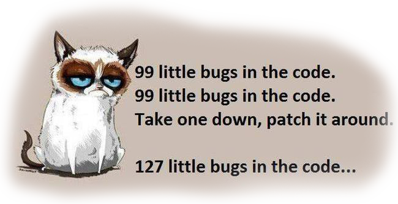

Tietokantasovelluksen esittelysivu
Yleisiä linkkejä
Työn repositorio
Työn dokumentaatio
Connectiontest-ohjelma
HTML-demosivujen etusivu
Ensimmäinen oma tietokantalistaus
Kirjautuminen
Työn aihe
Hiihtokisojen tulospalvelu
.
Kirjautumistunnuksia testausta varten
Pääkäyttäjän tunnus ja salasana:
testaaja, testisalasana
